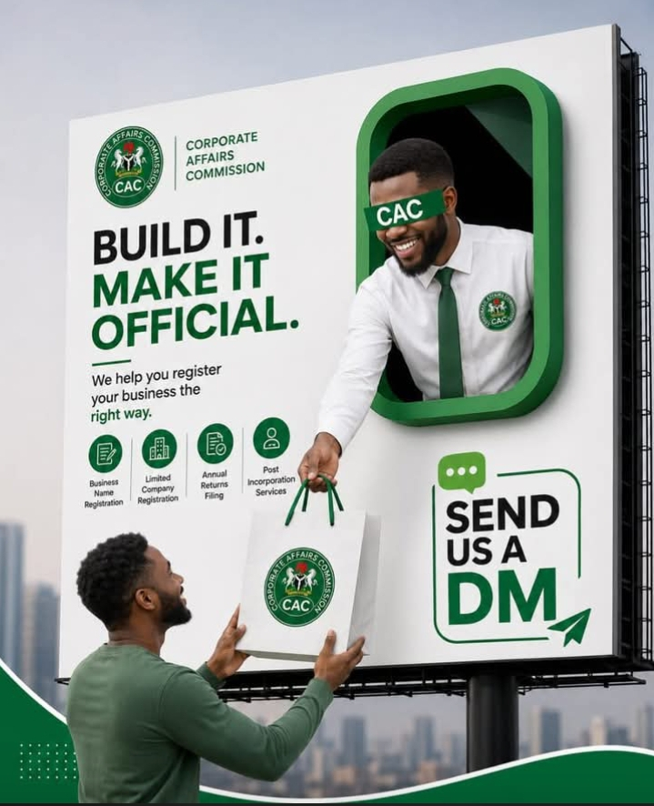
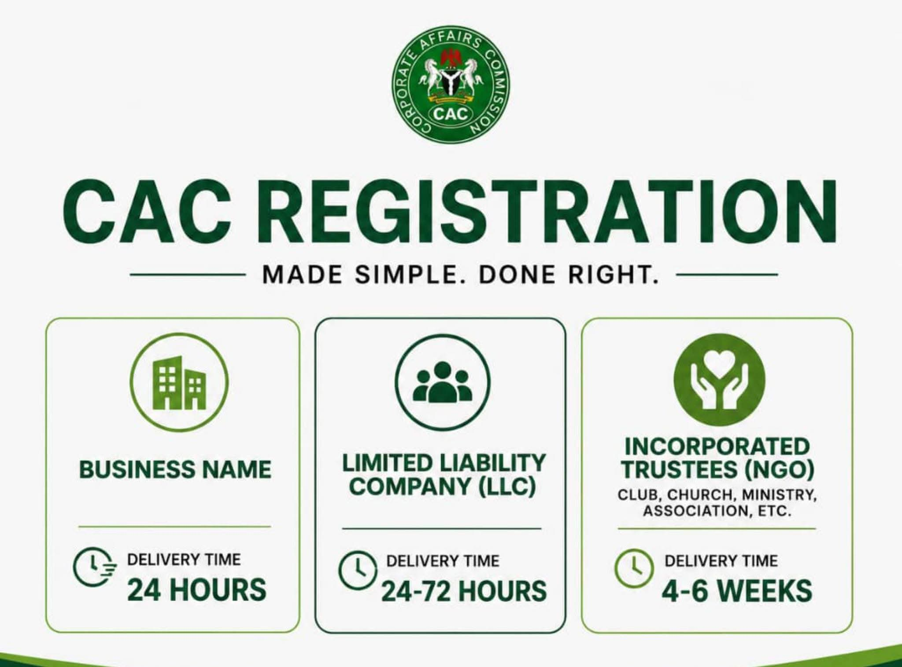

▣
Business Registration
Business Name, Limited Liability Company and Incorporated Trustees / NGO registration.
FUTUREPROOF helps Nigerian businesses register properly, understand their compliance position, protect their brands and get practical support when action is required.
Register. Stay compliant. Grow.

Start with the service you need now, or use the assessment to identify areas that may require attention.
Business Name, Limited Liability Company and Incorporated Trustees / NGO registration.
Annual returns, post-incorporation services, status reports and compliance reviews.
TIN, registrations, tax clearance, PAYE, VAT, WHT and compliance support.
Trademark registration and practical support for protecting your business identity.
Our guided business assessment asks about registration, tax, CAC obligations, licences, trademark protection and employee-related compliance. Your result is informational and gives you a clearer picture of what may need attention.
Use the assessment, choose a service, schedule a consultation or contact the team through the channel you prefer.

Call, chat on WhatsApp, or submit a support ticket that goes directly to the FUTUREPROOF email inbox.